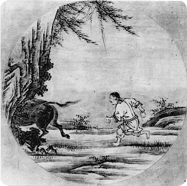

| LIVE ZEN kätkeb
endas nii
virtuaalset kui füüsilist kohta aitamaks avastada teed oma lätte
juurde, oma isiksuse algallika juurde, abiks meetodid, mis on olnud
kasutusel Osho kommuunides. Koht on avatud kõigile loomingulistele lähenemistele, mis virgutavad meie keha ja meele kohalolu ning ärgast teadvustumist. |
 |
|
Härga otsimas Kes on sees? 12. sajandil maalis hiina zen-meister uue versiooni taoistlikust pildiseeriast ning lisas omalt poolt kaks pilti originaali kaheksale. Ta mitte üksnes ei maalinud neid pilte uuesti, vaid lisas neile ka selgitused nii värsis kui proosas. Need said tuntuks kui ”10 Härga" ning on olnud zen-praktikas kasutusel läbi sajandite. “Härg on energia, vitaalsuse ja dünaamilisuse sünonüümiks. Härg tähendab elu ennast. Härg tähendab sinu sisemist jõudu, sinu potentsiaali.” (Osho) Samuti kasutatakse Zen-praktikas mõtlustehnikaid, mis kurnavad mõistuse niivõrd ära, et avaneb võimalus hüpata kohalolemisse. Selle tehnika nimi on "Koan". Õpilane töötab iseseisvalt oma koan-iga - oma küsimusega. 1968. aastal tuli Charles Berner’ile mõte, lasta õpilastel harjutada koan tehnikat paarides, võimaldades nii üksteisele toeks olla hinnangutest vaba kohaloluga ning nõnda läbida harjutusi ülimalt intensiivses vormis hommikust õhtuni. Grupis osalejad töötavad koan-iga "Kes on sees?", leidmaks oma tõelist olemust. Grupi toetav kohalolu aitab neil keskenduda oma otsingutele ja jätta kõrvale kõik, mis eksitab tähelepanu. Iga praktikapäeva teema on kantud erinevast loost ”10 Härga" kogumikus ning Osho kommentaaridega nendele lugudele. Teised tegevused: Meditatsioonipäevad - uute ja vanade tehnikate praktiseerimine Puudutuste keel - tunnetamaks enda kohalolu oma kehas, keha tunnetamine, tundlikkuse arendamine, massaaži-õpetus. Meditatsiooniteraapiad nagu Müstiline Roos, Uuestisünd, Ajuvaba - võimaldavad endalt heita aegade jooksul kogunenud kattekihte |
||